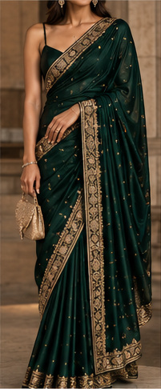
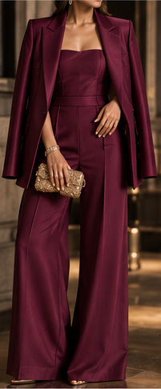
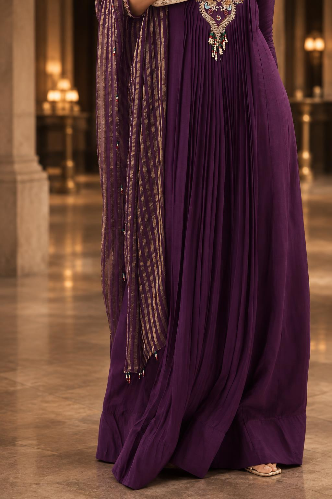
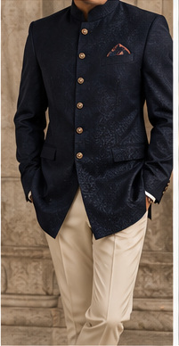
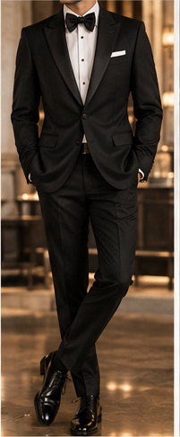
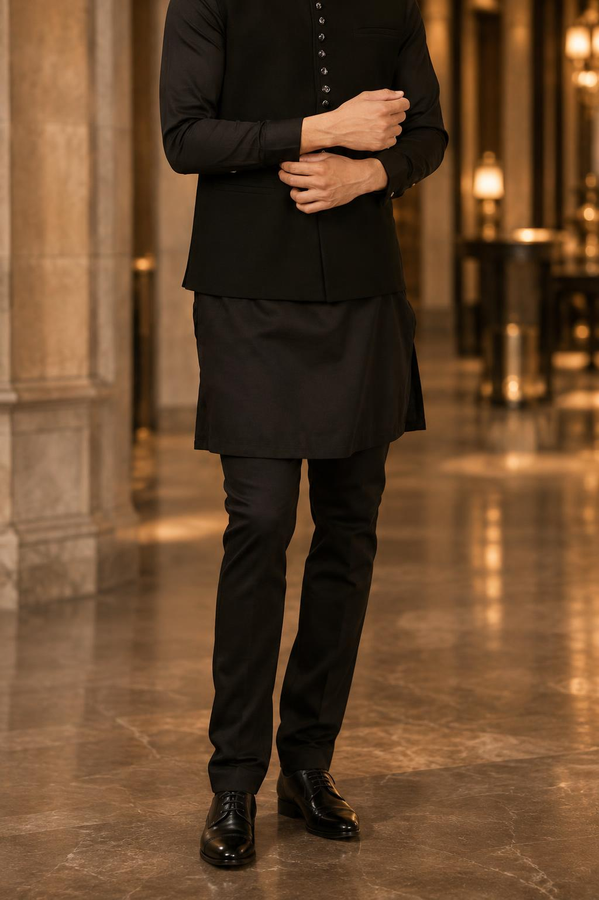

THE EVENING
What to expect.
A cocktail reception, a featured conversation with Indra Nooyi moderated by Anu Aiyengar, and a seated dinner celebrating the S.SUITE honorees.
YOUR EVENING · ALL TIMES EASTERN
Cocktail reception
Arrive, connect, and settle into the evening.
Welcome & opening program
An introduction to SALUTE and S.SUITE.
In conversation
Indra Nooyi, moderated by Anu Aiyengar.
Seated dinner & honors
The seated dinner and Honors Ceremony continue.
The program will begin on time. Please be seated by 7:20 PM.
When should I arrive?
Please arrive at 6:30 PM for the cocktail reception and time to connect before taking your seat by 7:20 PM. The program will begin on time. If you have received separate arrival instructions from the team, please follow those.
What time does the evening end?
The event will conclude by 10:30 PM.
Will there be drinks after the event?
Yes. Interested guests are welcome to join us for after-event drinks at a nearby venue. Location details will be shared separately.
What if I arrive after the program begins?
A member of our team will usher you to your assigned table. The program will begin on time, so we encourage you to arrive for the reception at 6:30 PM and be seated by 7:20 PM.
WHAT TO WEAR
Come dressed
to celebrate.
Formal South Asian or Western Attire.
Saris, lehengas, gowns, formal suits, or an elegant formal ensemble are all welcome. South Asian attire is not required—choose something that feels celebratory and true to your personal style.
ATTIRE INSPIRATION
South Asian, fusion, and Western formalwear. Wear what feels like you.
For women



For men



Inspiration only—no required colors or purchases. Additional photography: KALKI and Manyavar.
BEFORE YOU ARRIVE
Attending
the evening.
Is the event only for South Asian women?
No. Allies and guests of all backgrounds and genders are welcome to join us in celebrating South Asian leadership. Each attendee needs a confirmed seat.
Do I need to be a SALUTE member?
No. You do not need to be a SALUTE member to attend. Each guest does need a confirmed seat.
Can I attend on my own?
Absolutely. You do not need to come with a group. The opening reception offers time to meet other guests before the seated program.
I’m attending at a hosted table. Do I need a ticket?
Please check with your table host to confirm that a seat has been allocated to you and that your registration is complete before purchasing an individual ticket.
Can I bring an additional guest?
Each attendee needs their own confirmed seat. An individual ticket does not include an additional guest. Please confirm availability with the SALUTE team or your table host before making arrangements.
Where can I find ticket and table information?
Please use your dedicated invitation link if you received one from a partner or table host. Otherwise, visit the event website for current availability and options.
What do I need for check-in?
Please have your registration confirmation ready. Check-in will take place when you arrive at the venue.
I can’t find my confirmation. What should I do?
Check your spam or promotions folder. If you still cannot find it, email ssuite@salute.community with the name and email address used for registration. Include your table host’s name, if applicable.
GETTING HERE
Make your
way to us.
Prince George Ballroom
15 East 27th Street
Between Fifth and Madison Avenues
New York, NY 10016
Which subway stations are nearby?
R / W — 28 St at Broadway.
A short walk to East 27th Street and the ballroom.
6 — 28 St at Park Avenue South.
Walk west toward Madison Avenue and the venue.
Check MTA service updates and trip planning ↗ before traveling, including for your journey home. Service and accessible routes may vary.
Is parking available nearby?
Nearby paid garage options include:
- Champion Parking 29 LLC ↗Entrance: 10 East 29th Street
- NYC Parking East 28th Street Garage Corp. (iPark) ↗Entrance: 201 East 28th Street
- Kips Bay 27 Parking (Icon Parking) ↗Entrance: 240 East 27th Street
Please confirm rates, operating hours, vehicle restrictions, and availability directly with the garage before arrival, including access after the evening ends. Parking is arranged separately by guests and is not reserved with event registration.
PLAN AHEAD
A few
practical details.
Will dinner be served?
Yes. The evening includes a seated dinner served by Sukhadia’s.
Is coat check available?
Yes. Coat check will be available at the venue.
Will photography and video be taken?
Yes. Photography and video will be taken during the evening. Photo and video releases were included in the registration process. If you have questions, please email ssuite@salute.community before the event.
What if I have a dietary restriction or food allergy?
Please make sure your dietary needs are included in your registration details. For changes or questions, email ssuite@salute.community before the event and include your registration name. Flag food allergies explicitly so the team can confirm what can be accommodated.
Who should I contact about accessibility?
Please email ssuite@salute.community as early as possible with the support you need so the team can coordinate with the venue.
Is seating assigned?
Yes. Tables are assigned, and individual place cards will be provided at select tables.
Can I request to sit with someone?
Please contact your table host or email ssuite@salute.community with both attendees’ names. Seating requests are subject to availability and cannot be guaranteed.